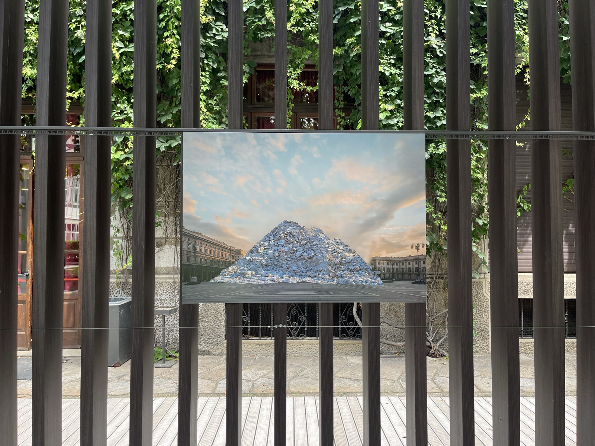
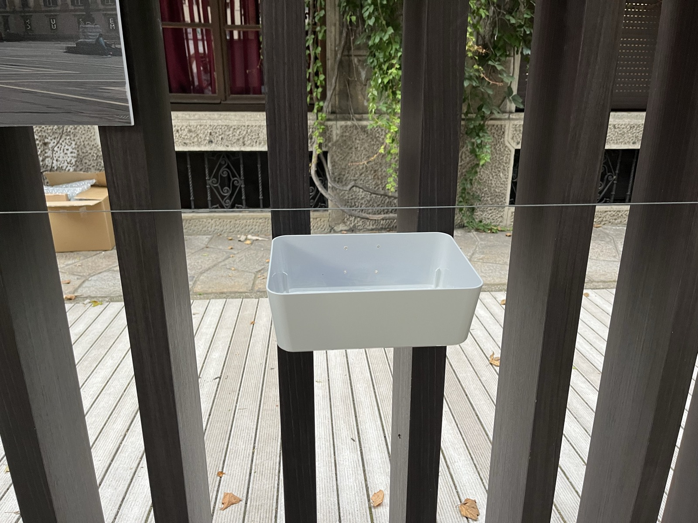
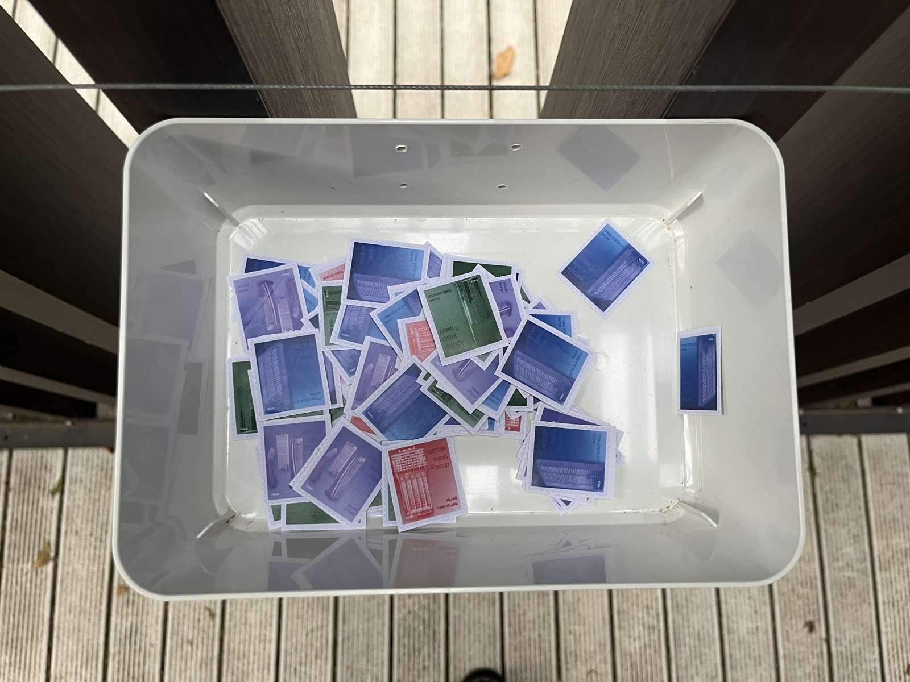
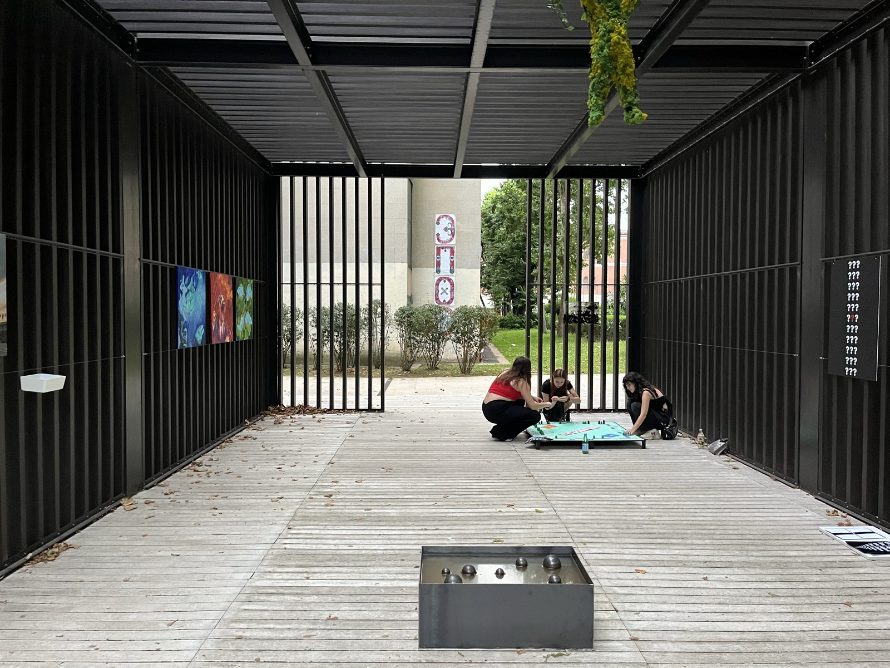

Diversi Presenti
- Milano, Società Umanitaria
- A cura di Stefano Serretta
- con Stefano Boccalini e Andrea Tinterri
La mostra è l'esito del lavoro svolto nel primo semestre 2023/24
dagli studenti del Triennio in Pittura e Arti Visive di
NABA, Nuova
Accademia di Belle Arti, in collaborazione con Società Umanitaria e
sotto la guida di Stefano Boccalini e Stefano Serretta. Il titolo
della mostra rimanda a Philip K. Dick:
Molti sostengono di ricordare una vita passata, ma io sostengo di
ricordare un'altra, diversissima, vita presente
. La citazione dello scrittore divenuto culto della science fiction
funge da spunto per sottolineare l'eterogeneità della visione degli
studenti italiani e internazionali del Triennio
NABA. Gli
studenti hanno riflettuto sulle possibilità espressive delle varie
pratiche artistiche di prefigurare un concetto, quale quello del
futuro
, sempre più compresso in un eterno presente, oggi che
tempo reale e real time si confondono, spesso annullandosi, così
come le differenze tra spazio fisico e virtuale. Gli studenti hanno
lavorato con modalità site-specific, immaginando
opere che potessero creare un dialogo diretto con gli spazi di
Società Umanitaria (connotati architettonicamente e lontani dal
white cube in cui spesso è intrappolata l'arte
contemporanea), e non hanno evitato un confronto con nuove
tecnologie e possibilità espressive, quali l'IA
e l'elaborazione video e digitale, cui si affiancano pittura,
scultura e performance.




Opere esposte:
Hostium Rabies Diruit - La rabbia dei nemici distrusse , Ruins
Artista
Partecipazione alla mostra collettiva con un progetto artistico.